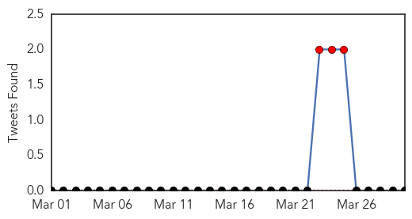
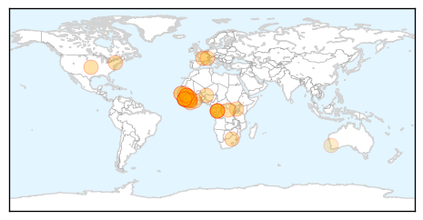
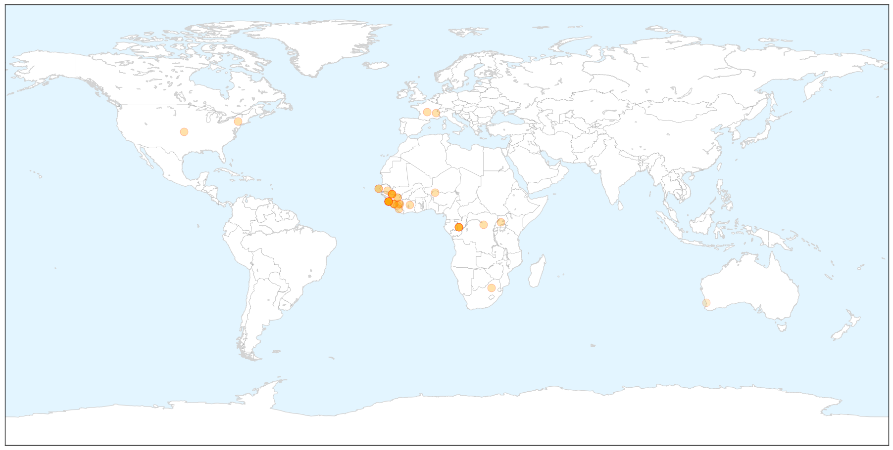
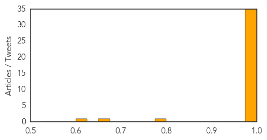

Ebola
30-Day Web Trend
10 alerts, 0 warnings

30-Day Twitter Trend
3 alerts, 0 warnings

Article Locations

X

Article Confidences
Top Articles:
- 1.000
- Senegal shuts land border with Guinea to stop Ebola
- 1.000
- Senegal shuts land border with Guinea to stop Ebola
- 1.000
- Guinea seeks to prevent spread of Ebola virus in capital
- 1.000
- West Africa allocates $250,000 to fight Ebola
- 1.000
- Ebola Outbreak Spreads to Conakry, Poses New Challenges
- 1.000
- Guinea battles to contain Ebola as Senegal closes its border (Video)
- 1.000
- Senegal shuts border as Guinea fights Ebola outbreak
- 1.000
- Liberia confirms Ebola cases as deadly virus spreads
- 1.000
- The Portland Press Herald / Maine Sunday Telegram
- 1.000
- Ebola Outbreak In Guinea, Sierra Leone And Libera
- 1.000
- Ebola Outbreak Spreads to Conakry, Poses New Challenges
- 1.000
- Senegal Shuts Land Border With Guinea to Prevent Ebola Spreading
- 1.000
- Guinea battles to contain Ebola as death toll rises
- 1.000
- Guinea: Ebola death toll reaches 70
- 1.000
- Guinea battles Ebola as virus spreads to capital
- 1.000
- Guinea says has contained Ebola outbreak, death toll rises
- 1.000
- Ebola death toll reaches 70 in Guinea
- 1.000
- Ebola Threat Prompts Senegal to Close Its Borders
- 1.000
- Ebola Continues to Ravage Guinea as Death Toll Reaches 70
- 0.999
- Ebola Haemorrhagic Fever, Guinea (Situation as of 30 March 2014) - Guinea
- 0.998
- Senegal shuts border with Guinea to prevent Ebola spreading
- 0.998
- Ebola update: Number of deaths at 70, Senegal closes border
- 0.998
- Senegal shuts border with Guinea to keep out Ebola virus
- 0.998
- Senegal shuts border as Ebola spreads in Guinea
- 0.996
- Guinea battles to contain Ebola epidemic
- 0.996
- Guinea battles to contain Ebola epidemic
- 0.996
- Liberia confirms Ebola's arrival from Guinea
- 0.996
- Senegal seals borders as Guinea Ebola epidemic kills dozens — RT News
- 0.996
- Senegal shuts land border with Guinea to prevent Ebola spreading
- 0.995
- Beware of bats: Guinea issues bushmeat warning after Ebola outbreak
- 0.995
- No Ebola Outbreak In Nigeria – Health Minister
- 0.993
- Senegal closes border with Guinea
- 0.988
- Senegal shuts land border with Guinea to prevent Ebola spreading
- 0.988
- 2 cases of Ebola confirmed in Liberia
- 0.979
- 2 cases of Ebola confirmed in Liberia
- 0.799
- Wellesley Expert Available to Comment
- 0.667
- Ebola case found in Guinea’s capital
- 0.618
- World broefs: Obama awards Saudi woman
Top Tweets:
-
No tweets found for Mar 30, 2014